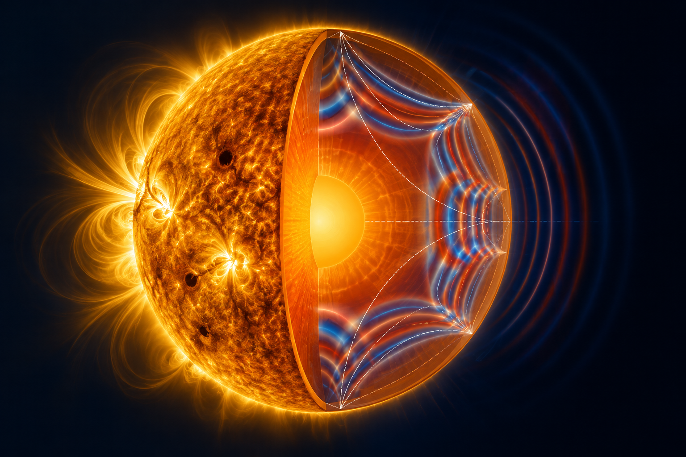
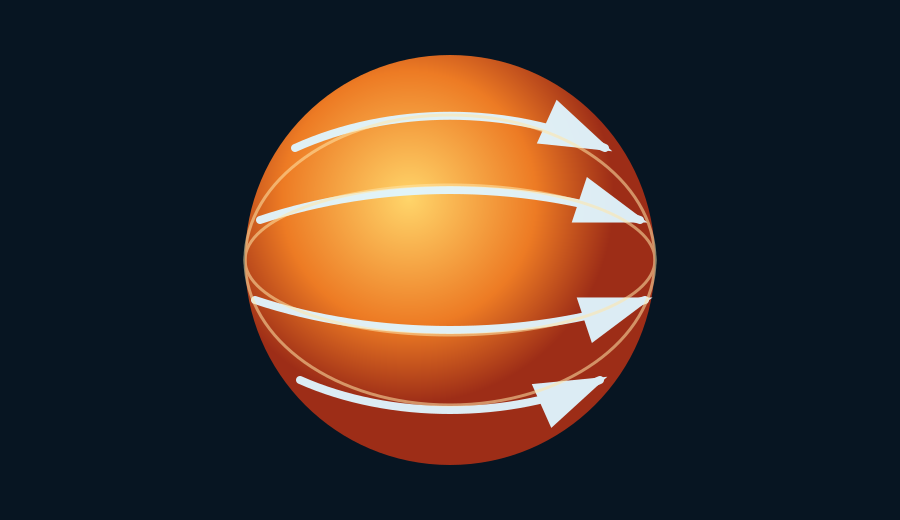
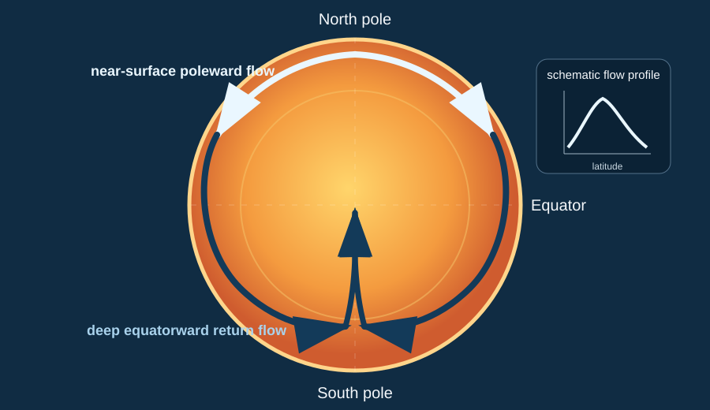
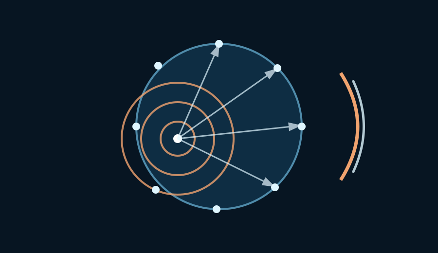

Helioseismology · Inverse Problems
Björn Müller
Postdoctoral Researcher · Max Planck Institute for Solar System Research
I develop theoretical and computational methods for inverse problems in helioseismology, with a particular focus on passive imaging and helioseismic holography to reconstruct subsurface solar flows from seismic observations.

About
Imaging the solar interior through inverse problems
I am a postdoctoral researcher at the Max Planck Institute for Solar System Research in Göttingen, Germany. My research lies at the intersection of inverse problems, passive imaging, and helioseismology.
In my work, I reconstruct subsurface flows in the solar interior. I have developed an inversion technique that enables imaging of the solar interior at high spatial resolution. Furthermore, I study uniqueness, stability, and nonuniqueness in passive imaging problems.
Awards
Selected awards & recognition
Recognition for my work in inverse problems and helioseismic holography.
IOP Best Paper Award · Inverse Problems
For “Quantitative passive imaging by iterative holography: the example of helioseismic holography.”
Otto Hahn Medal · Max Planck Society
For the work on “Iterative helioseismic holography.”
Research
Selected research themes
Quantitative passive imaging
Reconstructing parameters in a wave equation from correlation measurements.
Reconstruction of subsurface solar flows
Developing new inversion techniques to image solar rotation and meridional circulation in the solar interior.
Uniqueness of passive inverse parameter problems
Deriving sufficient conditions that ensure uniqueness and stability in passive inverse parameter problems.
Holography in X-ray physics
Developing new inversion techniques for imaging from intensity correlations in X-ray physics.
Publications
Papers & preprints
Peer-reviewed publications, current preprints, conference proceedings, and selected manuscripts in preparation.
Peer-reviewed publications
2024
Quantitative passive imaging by iterative holography: the example of helioseismic holography
B. Müller, T. Hohage, L. Gizon, D. Fournier · Inverse Problems 40(4), 045016
2022
The Great Slump: Mrk 926 reveals discrete and varying Balmer line satellite components during a drastic phase of decline
W. Kollatschny, M. W. Ochmann, S. Kaspi, C. Schumacher, E. Behar, D. Chelouche, K. Horne, B. Müller, S. E. Rafter, R. Chini, M. Haas, M. A. Probst · Astronomy & Astrophysics 657, A122
Preprint
2026
Holographic X-ray Phase Contrast Imaging with Partial Coherence: Uniqueness and Reconstructions from Intensity Correlations
T. Hohage, M. Karimi, B. Müller · arXiv preprint
Doctoral thesis
2023
Iterative helioseismic holography
Björn Müller · Ph.D. thesis, Georg-August-Universität Göttingen
Conference proceedings
2026. T. Hohage, B. Müller, “Uniqueness results in time-harmonic passive imaging with applications to helioseismology,” WAVES 2026, p. 165.
2026. B. Müller, T. Hohage, “Stability of a passive inverse parameter problem with applications to helioseismology,” WAVES 2026, p. 245.
2024. T. Hohage, B. Müller, D. Fournier, L. Gizon, “On quantitative passive imaging,” WAVES 2024, p. 197.
2024. B. Müller, T. Hohage, L. Gizon, D. Fournier, “Using iterative helioseismic holography for inversions of solar differential rotation,” WAVES 2024, p. 211.
2022. B. Müller, L. Gizon, T. Hohage, D. Fournier, “Iterative helioseismic holography—Inversions for solar differential rotation,” WAVES 2022, p. 314.
Selected manuscripts in preparation
B. Müller, T. Hohage, “Unique identifiability of interior parameters in passive imaging with applications to helioseismology.”
B. Müller, T. Hohage, “Stability of the inverse parameter problem in passive imaging with applications to helioseismology.”
B. Müller, T. Hohage, “Nonuniqueness of simultaneous reconstruction of potentials and source strength in passive imaging.”
B. Müller, T. Hohage, “Unique identifiability of finite-measure source powers from passive near-field measurements.”
B. Müller, L. Gizon, D. Fournier, T. Hohage, “Iterative helioseismic holography of solar differential rotation applied to synthetic data.”
B. Müller, L. Gizon, D. Fournier, T. Hohage, “Improved helioseismic holography of solar meridional flows applied to synthetic data.”
Projects
Current projects

Reconstructing the north–south antisymmetric solar rotation
Using helioseismic observations to recover subtle latitude-dependent rotational flows beneath the solar surface.

Reconstructing the deep meridional circulation
Imaging the weak poleward and return flows that form the Sun's large-scale meridional circulation.

Proving uniqueness and stability for passive imaging problems
Understanding when correlation measurements uniquely and stably determine parameters of the underlying wave equation.
Curriculum Vitae
Experience, education, talks and awards
Postdoctoral researcher at MPS since 2023; Ph.D. in Physics (summa cum laude) from the University of Göttingen.
Contact
Get in touch
Max Planck Institute for Solar System Research · Göttingen, Germany